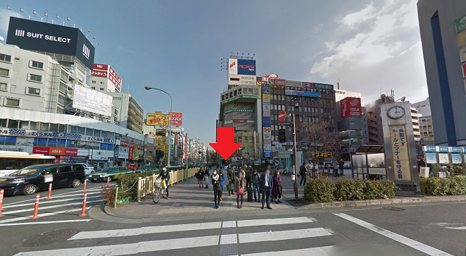

|
▼2017年度新歓情報について ＊入会は随時受け付けています。 お気軽に当会の主務までご連絡ください。（下記参照） ◆新歓ブース◆ 今年度の新歓ブースは10号館201教室です！ ◆新歓コンパ◆ 早稲田剣道同好会では新入生に対しての最初の行事として新歓コンパを行います。 詳細については以下の通りです。 ○日程： 4月29日（土曜日） ○場所：１次会と２次会を用意しています！ ＊新入生無料！！ ○集合時間：開始２０分前を目安にお店に来るようにお願いします！ ○集合場所：一次会：だるま 18::00より 下の写真の赤い矢印のあたり（プロミスの看板のビルの下）にて幹部が案内しております。  ＊開始時間より遅刻する場合や、場所がどうしても分からない場合、 まだ新歓コンパの参加を希望する方で連絡していない場合は、 当会の主務までご連絡ください。 主務（幹事長） 山本 拓海（政治経済学部３年） tamac55taku(a)icloud.com 上の(a)を@に置き換えて送信してください。 |